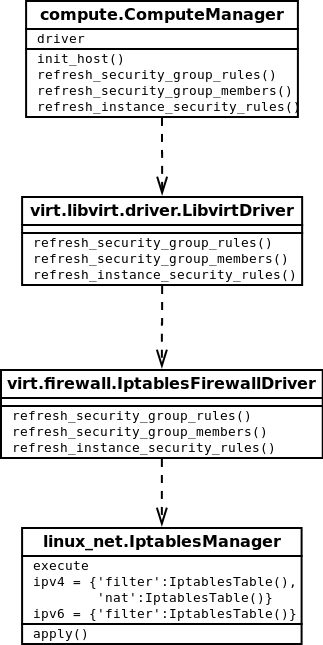
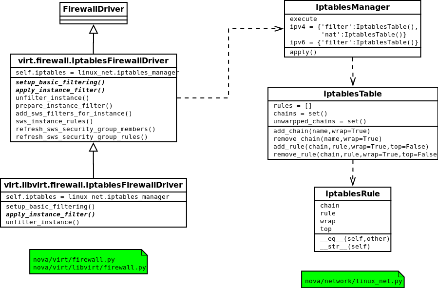

Security Group（安全组）是虚拟机网络中的重要组成部分，可以用来控制虚拟机之间的网络流量。 反映到底层,就是利用iptables给宿主机添加iptables规则。
Openstack中nova有一个默认的安全组，如果不进行指定，nova就给寻及分配这个默认的安全组。 nova中有两个非常重要的组件，一个是db，一个是message queue，db用来记录各种状态，message queue用来在各个服务和各个节点之间传递消息，这种机制，在这里可以得到非常好的体现。
API层进行rpc后，就交给compute.ComputeManager，进行依次调用。 ComputerManager中有一个driver，都知道这个driver默认的就是libvirt，还有就是init_host()方法比较重要，每个Manager都有这样一个方法，是相对应的服务在启动的时候调用的，用来进行一些初始化，主要做的工作是对网络进行初始化，建立一些初始的chain和rule。
每个安全组可以有多个规则，每个规则的属性如下：
ipProtocol: means the ip protocol of the security group, like ICMP, TCP, UDP, and so on.
fromport, toport: 这条安全组规则的影响端口范围，例如22就表示ssh，443表示http与https. To be noticed, fromport=-1 and toport=-1 means all port will be affated.
cidr: 无类别域间路由，这里区别于传统的A、B、C类网络地址，可以是任意进行IP类别划分, such as 192.168.250.222/28, it means that ip in that block will be affected by this security goup rule.
source group: it means this security group affact the members(virtual machine) of other security goups.
for example, we can add this command: nova secgroup-add-rule default tcp 22 22 172.31.0.224/28. Then we will get this:
| IP Protocol | From Port | To Port | IP Range | Source Group |
| tcp | 22 | 22 | 172.31.0.224 |
目前Openstack社區將Neutron分离出來，Neutron的安全組更便於使用。 Nova的安全組默認只支持入口规则创建，而Neutron可以双向控制。
最近看了下nuetron和nova network对securitygroup的差异，总结如下：
总体功能和界面体现并误差，实现上完全从nova分离，转到neutron的管理中，nova则更关注与compute相关的信息。 但在rest api返回上，字段发生了比较明显的变化。
nova返回的security group rule的json格式：
"rules": [
{
"from_port": 99, #端口起始地址，与toPort构成集合
"group": { #允许被另一个租户的安全组为aaa的机器访问
"tenant_id": "51b1873935554545bb9b953e4055a997", #自身租户ID或者另一安全组的所属租户ID（待查）
"name": "aaaaaaaaaaaaaaaaa" #允许被另一安全组访问的安全组名称
},
"ip_protocol": "tcp", #访问协议
"to_port": 99, #
"parent_group_id": "2b430fbb-656f-4c56-a863-786bb8f97b0b", #所属安全组ID
"ip_range": {}, #允许被访问的网络cidr，与group之间是二取一的关系
"id": "09245bbd-6e03-4264-9c19-27a534702c3d" #自身ID
}
}
neutron返回的security group rule的json格式：
"security_group_rule": {
"remote_group_id": "f7518f66-9f50-4568-b42d-5577f6899ad9", #可访问的远程安全组id
"direction": "ingress", #访问方向，ingress表示从外部访问虚拟机
"remote_ip_prefix": null, #可访问的远程cidr，与remote_group_id之间是二取一的关系
"protocol": null, #可访问的网络协议
"tenant_id": "dc3c2f4fd2a84ddbba087360d10461db", #所属租户ID
"port_range_max": null, #端口范围最大值（同上面的toPort）
"security_group_id": "f7518f66-9f50-4568-b42d-5577f6899ad9", #所属安全组的ID
"port_range_min": null, #端口范围最小值（同上面的fromPort）
"ethertype": "IPv4", #网络类型（ipv4/ipv6)
"id": "0bd5a998-c392-4da2-8450-14219883e515" #自身ID
}